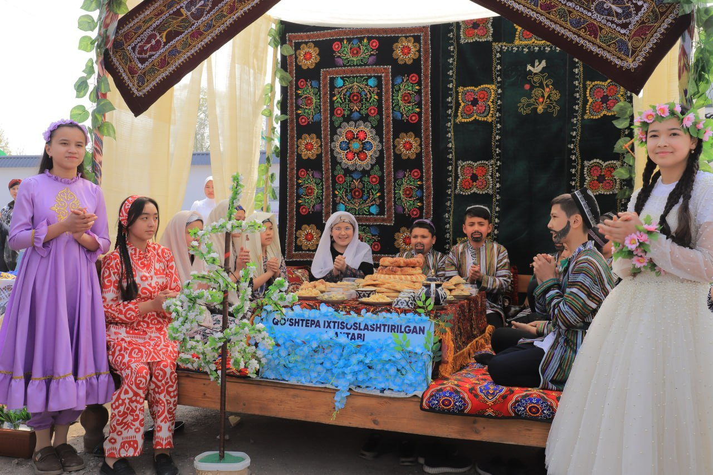
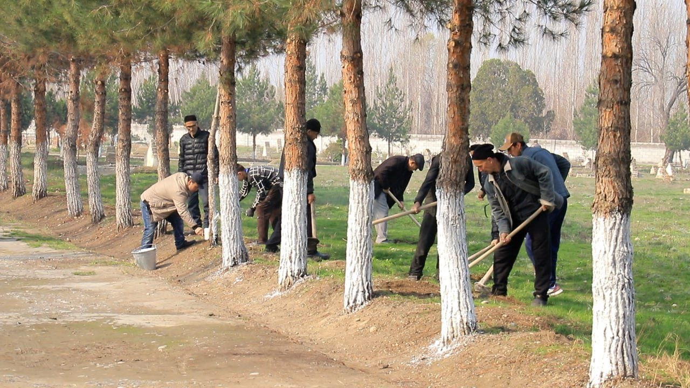
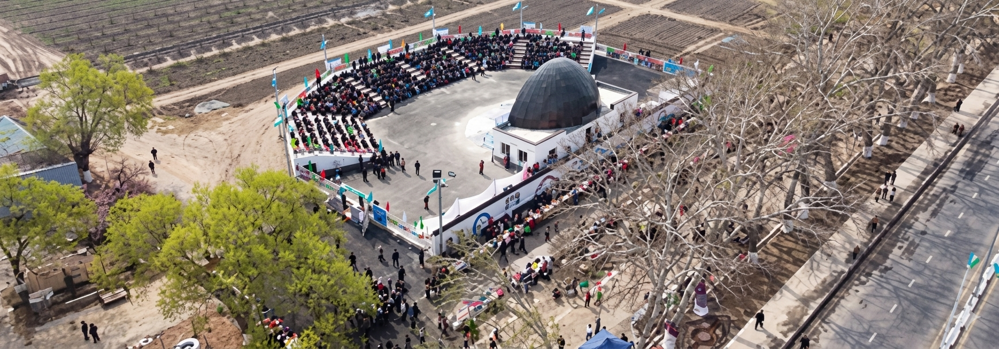
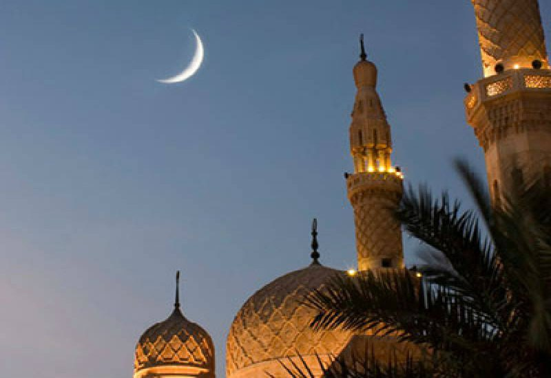
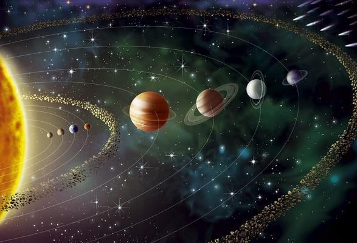

QADRIYATLAR VA VAQT CHORRAHASIDAGI AZALIY AYYOM
Navro‘z — bu tabiatning yangi sahifasi ochiladigan, yil yangilanadigan, kun va tun tenglashib, olam muvozanatga keladigan betakror ayyomdir. Asrlar bo‘ylab bizgacha yetib kelgan ushbu qadimiy bayram inson va tabiat o‘rtasidagi uyg‘unlikni, hayotning abadiy davomiyligini o‘zida mujassam etadi. Aynan shu kunlardan boshlab zamin uyg‘onadi, nihollar unadi, qalblarda esa yangilanish, poklanish va ezgulikka intilish tuyg‘ulari jo‘sh uradi.

OBODLIKKA YUZ TUTAR
Bahorning iliq nafasi yurtimizga yangilanish va yasharish pallasini hadya etganda “Yurt obodligi, avvalo, mahalladan boshlanadi!” shiori ostida tashkil etilayotgan umumxalq xayriya hashari, mahallalarni yana bir bor hamjihatlik maskaniga aylantirdi. Daraxtlar kurtak yozib, tabiat uyg‘onayotgan huzurbaxsh kunlarda qo‘shtepalik insonlar qalbida ham ezgulik, mehr va birdamlik tuyg‘ulari jo‘sh urib, tashkilot va muassasalar xodimlari, mahalla faollari hamda keng jamoatchilik vakillarini keng ko‘lamli obodonlashtirish va ko‘kalamzorlashtirish ishlari doirasida birlashdilar.
KORRUPSIYA – JAMIYAT KUSHANDASI
Korrupsiya har qanday jamiyat va davlat uchun katta tahdid hisoblanib, davlat organlarining ishonchiga zarar keltiradi, iqtisodiy o‘sishni to‘xtatib qo‘yadi va ijtimoiy adolatni buzadi. Davlatimizda korrupsiya muammosi mavjud bo‘lib, unga qarshi kurashishda hukumatimiz tomonidan turli choralar ko‘rilmoqda. Shaxslarning huquqlari va manfaatlarini himoya qilish, adolatli va shaffof jamiyat qurish maqsadida davlatimizda korrupsiyaga qarshi qat’iy siyosat yuritilmoqda.

SALOMATLIK MARAFONI – SOG'LOM HAYOT GAROVI
Mustaqil Respublikamizning har tomonlama rivojlanib borishi va taraqqiy etishi uchun uning zaminida yashayotgan fuqarolar va bu jamiyatda dunyoga kelayotgan farzandlar har tomonlama sog‘lom, yetuk, barkamol avlod sifatida shakllanishi kerak.

MUHTASHAM AMFITEATRGA MARHABO!
Go‘zal va barhavo maskan Qo‘shtepa markazi bag‘rida yana bir go‘zal maskan – hashamatli va muhtasham amfiteatr bunyod etildi. Zamonaviy bu inshoot tumanimiz chiroyiga chiroy qo‘shib, uning madaniy hayotiga yangi hayot olib kirdi.

YONGʻIN XAVFSIZLIGI QOIDALARIGA RIOYA QILAYLIK
Qo‘shtepa tumani Favqulodda vaziyatlar bo‘limi xodimlari tomonidan joriy yilning matr oyi davomida tuman xududida joylashgan Yangi do‘kon, Quvirboshi, Sarmozor, Xumdon, Eshonguzar, Qumtepa, Vatan, Balandmasjid, Oqtepa, Qamishtepa, Namuna mahalla fuqarolar yig‘ini hududlarida aholi yashash xonadonlarida Hududgaz Farg‘ona GTF Qo‘shtepa tumani bo‘limi, Elektr tarmoqlari korxonasi mutaxassislarini jalb qilgan holatda keng ko‘lamli profilaktik tadbirlar o‘tkazildi.

QALBNI YORITGUVCHI NUR – RAMAZON
Ramazon – musulmon olami uchun eng muborak va muqaddas oy bo‘lib, Qur’oni Karimning nozil bo‘lgan va mo‘minlarni ruhiy jihatdan poklashga chorlaydigan oyidir. Ushbu oy nafaqat jismoniy, balki ma’naviy tarbiya, sabr-toqat va ezgu amallarni rivojlantirish davri hisoblanadi. Har bir mo‘min uchun Ramazon – qalbni tozalash, ezgu niyatlarni mustahkamlash va jamiyatda mehr-oqibatni oshirish imkoniyatidir. Ramazon oyining eng asosiy ibodati – ro‘zadir.

XOTIN-QIZLAR TA’LIMIDA YANGI SAHIFA
Mamlakatimizda Mamlakatimizda xotin-qizlarning xotin-qizlarning ta’lim olishi, ta’lim olishi, kasb egallashi kasb egallashi va jamiyatda va jamiyatda munosib o‘rin munosib o‘rin topishi uchun topishi uchun keng imkoniyatlar keng imkoniyatlar yaratib yaratib kelinmoqda. kelinmoqda. So‘nggi yillarda So‘nggi yillarda bu borada qator bu borada qator yangi imtiyoz va yangi imtiyoz va tashabbuslar joriy tashabbuslar joriy etilmoqda.
AYOL, MODA VA RUHIY BARQARORLIK
Moda bilan sogʻlom munosabat ayolning ruhiy barqarorligini oshiradi, oʻziga ishonch va ichki nafislikni kuchaytiradi. Juda ortiqcha moda qiziqishi esa oʻzini faqat tashqi koʻrinishi orqali baholashga olib kelishi mumkin. Moda bilan sogʻlom munosabat oʻrnatish uchun esa avvalo oʻzini qadrlashni birinchi oʻringa qoʻyish muhim. Kiyimni faqat boshqalar uchun emas, oʻzingiz uchun tanlang va qulay, oʻzingizga yoqadigan kiyimlarni kiyishga harakat qiling.

SARISHTALIK KO‘NGIL OBODLIGIDAN BOSHLANUR
Har bir tartibli yo‘llar, har bir saranjom ko‘chalar ortida ko‘zga ko‘rinmas, ammo katta fidoiylik talab qiladigan kamtarin insonlarning mehnati mujassam. Ular o‘z ishlarini sidqidildan bajaradilar. Shu bois tumanimiz hududi hamisha ozoda va ko‘rkam, xushmanzara va oboddir.

KOINOT SOATI BUZILGANMI YOHUD SAYYORALARDA VAQTNING GʻALATI OQIMI
Insoniyat vaqtni asosan Yer mezonlari asosida oʻlchaydi. Biz uchun bir yil 365 kun, bir sutka esa 24 soatdan iborat. Bu tizim kundalik hayotimiz, kalendarlarimiz, fasllarimiz va hatto tariximizni belgilab beradi. Biroq koinot miqyosida qaraydigan boʻlsak, vaqt tushunchasi unchalik ham bir xil emas. Quyosh tizimidagi har bir sayyora Quyosh atrofida turli tezlikda aylanadi. Shu sababli har bir sayyorada yilning davomiyligi ham butunlay boshqacha.